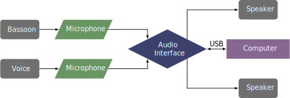

This piece was composed in 2014 for Elizabeth Pacheco Rose, soprano, and Saxton Rose, bassoon. It was revised in November 2020. The piece can be obtained by contacting the composer at his website.
This piece is for soprano, bassoon, and Max/MSP. A microphone for each performer is required, which needs to be routed into an audio interface going to the computer. The patch by default is controlled by the space bar on the computer or via a USB foot pedal. The patch also has some images to project behind the performers as the piece progresses.
A possible setup is shown below. 
A screenshot of the Max patch is shown in the screenshots section. If the performers are using a USB pedal, they will need to double click on the "midiin" box, next to the bright blue box, to select their device. Then the patch simply advances by pressing the spacebar or the MIDI pedal.
The bassoon part is fairly difficult, mostly because of the range, chromatic intervals, and some of the quicker passages. The vocal part similarly features many chromatic intervals. Perhaps the most challenging part of this piece would be the two parts lining up with each other and with the computer part. The cues for the Max patch are relatively simple and can likely be done easily by one of the performers or by a separate patch operator. Parts that the computer always plays are marked clearly in the score, although it may not sound exactly the same from performance to performance due to the improvisation.
Stylistically, the piece is atonal, with metrically indeterminate rhythms. It also features some improvisation by all parts, including the Max patch. Overall, it is a beautiful piece, but may not be well received by audiences unaccustomed to atonal music.
©2024 by Benjamin Bradshaw
Logo ©2024 by Hannah Bradshaw